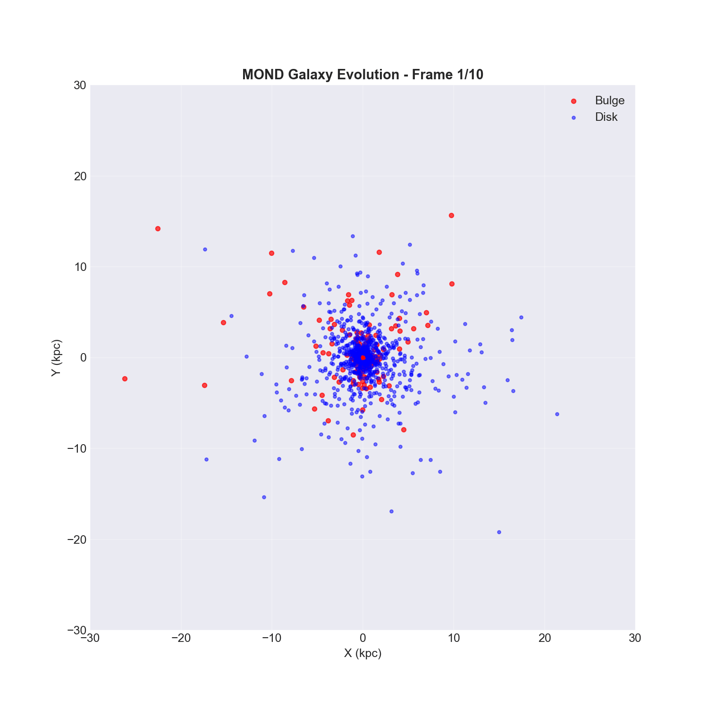

🌌 MOND 3D Evolution
Gravitational Dynamics without Dark Matter
🎬 Galactic Evolution (2.0 Gyr)
This 3D N-Body simulation tracks 1,000 particles using a Leapfrog integrator within a QUMOND potential.
📈 Rotation Curve

Verification of velocity flattening: $V(r) \rightarrow \text{const}$ as $g \rightarrow a_0$.
⚖️ Tully-Fisher Law

Demonstrating the $M \propto V^4$ scaling inherent to MOND.